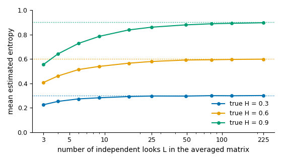

| SAR Concepts: Polarimetric Speckle, Wishart Statistics and Classification | |
In polarimetric data, speckle affects the whole covariance matrix, not just one intensity. The averaged matrix of a uniform area follows a known distribution, the complex Wishart distribution. It tells you how much averaging a result needs, how a filter must treat the matrix, and how SNAP's Wishart classifiers and change detector decide between classes or dates.
The matrices C and T are defined on the Polarimetry Primer page; speckle in single-channel images is covered on Speckle and multilooking.
For a distributed target, the target vector k of one look (dimension q = 2, 3 or 4) is a zero-mean, circular complex Gaussian vector with covariance Σ = E[k kH] (Goodman 1963). Averaging L independent looks gives the sample matrix
<C> = (1/L) Σi=1..L ki kiH
L<C> follows a complex Wishart distribution with L degrees of freedom. For L ≥ q its density is
p(<C>) = LLq det(<C>)L−q exp[ −L tr(Σ−1 <C>) ] / [ K(L, q) det(Σ)L ]
K(L, q) = πq(q−1)/2 Γ(L) Γ(L−1) ... Γ(L−q+1)
The mean of <C> is Σ, so averaging is unbiased for the matrix itself. Each diagonal element on its own is an L-look intensity with the usual gamma distribution. Quantities computed non-linearly from <C>, such as eigenvalues, entropy, alpha angle and coherence, are biased when L is small (Figure 1).

Figure 1. Monte Carlo simulation of the entropy estimated from a Wishart-distributed coherency matrix, 2000 trials per point. With few looks the entropy is underestimated, most strongly for high-entropy (vegetated) targets. True values are the dotted lines.
The equivalent number of looks (ENL) measures how much averaging an intensity has received. It is estimated over a uniform area as
ENL = (mean of I)2 / variance of I
A single-look SLC has ENL ≈ 1. Averaging a matrix over a window of n pixels raises it to roughly ENLin × nindep, where nindep ≤ n is the number of independent pixels in the window. Oversampled SLC pixels and products that were already filtered or multilooked are correlated with their neighbours, so nindep is smaller than n.
| Window on an SLC (ENLin ≈ 1) | Upper bound on looks | Entropy bias for H = 0.9 (Figure 1) |
|---|---|---|
| 3 × 3 | 9 | about −0.1 |
| 5 × 5 | 25 | about −0.04 |
| 7 × 7 | 49 | about −0.02 |
A polarimetric speckle filter must apply the same weights to every element of C or T. A weighted sum of valid covariance matrices with non-negative weights is again Hermitian and positive semi-definite, and the correlations between channels are kept. Filtering each band separately, or with weights that differ between elements, can produce matrices with negative eigenvalues, cross-talk between channels and wrong entropy and alpha values. The filters in SNAP derive one set of weights per pixel from the span and apply it to all elements:
| Filter | How it averages | Strength | Weakness |
|---|---|---|---|
| Box car | Plain mean over a square window | Maximum speckle reduction, unbiased | Blurs edges, lines and point targets |
| Refined Lee | Minimum mean-square-error weighting in an edge-aligned sub-window (Lee, Grunes and De Grandi 1999) | Keeps edges | Less smoothing in textured areas |
| Improved Lee Sigma | Averages only pixels within a sigma range; detects and keeps strong point targets (Lee et al. 2009) | Keeps point targets | More parameters to set |
| IDAN | Grows an adaptive neighbourhood of similar pixels by region growing (Vasile et al. 2006) | Many looks in large uniform areas, sharp boundaries | Slower |
For a class with centre Vm (its mean coherency or covariance matrix), the maximum-likelihood rule derived from the Wishart density assigns a pixel to the class with the smallest distance
d(<T>, Vm) = ln det(Vm) + tr(Vm−1 <T>)
(Lee, Grunes and Kwok 1994). The classifiers in SNAP differ in how they find the class centres:
To test whether two coregistered, averaged matrices C1 and C2, each with N looks, come from the same Σ, Conradsen et al. (2003) use the likelihood-ratio statistic
ln Q = N [ ln det C1 + ln det C2 − 2 ln det((C1 + C2)/2) ]
When nothing has changed, −2 ln Q is approximately χ2-distributed with q2 degrees of freedom (4 for C2, 9 for C3/T3). The paper also gives a small-sample correction factor that is close to 1 for large N. Because ln Q is proportional to N, N must be the number of looks of the matrices actually compared, after window averaging, not the ENL of the input.
Polarimetric-Speckle-Filter): Box Car Filter,
Refined Lee Filter (default), Improved Lee Sigma Filter, IDAN Filter. A quad-pol SLC is written as
T3 bands, a dual-pol or compact-pol SLC as C2 bands, and a matrix product keeps its matrix type.
Number of Looks (1–4, default 1) is the ENL of the input and sets the expected speckle
level. Box car uses Filter Size (default 5); Refined Lee and Lee Sigma use Window
Size (5×5 to 17×17, default 7×7); Lee Sigma adds a sigma of 0.5–0.9
(default 0.9) and a point-target window (3×3 or 5×5); IDAN uses the Adaptive
Neighbourhood Size (default 50 pixels).Polarimetric-Classification):
Cloude-Pottier, Cloude-Pottier Dual Pol, H Alpha Wishart (default), H Alpha Wishart Dual Pol,
Freeman-Durden Wishart and General Wishart. Window Size default 5; Maximum Number of Iterations
default 3; for Freeman-Durden and General Wishart, initial classes 90, final classes 15 and a
mixed-category threshold of 0.5. Output bands: H_alpha_class,
H_alpha_wishart_class, Freeman_Durden_wishart_class,
General_wishart_class; class 0 is no-data.supervised_wishart_class).
Input: a quad-pol SLC, T3 or C3, or a dual-pol SLC or C2.Polarimetric-Change-Detection) implements the
test above for C2, C3 or T3 pairs. Its Number of Looks (ENL) (default 5) is used as N
exactly as entered; the window looks are not added and no small-sample correction is applied. Set
it to about ENLin × Window Size2, reduced for correlated pixels.